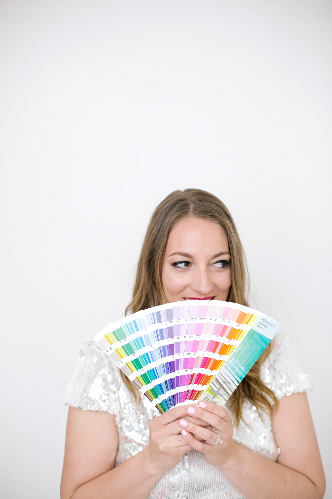
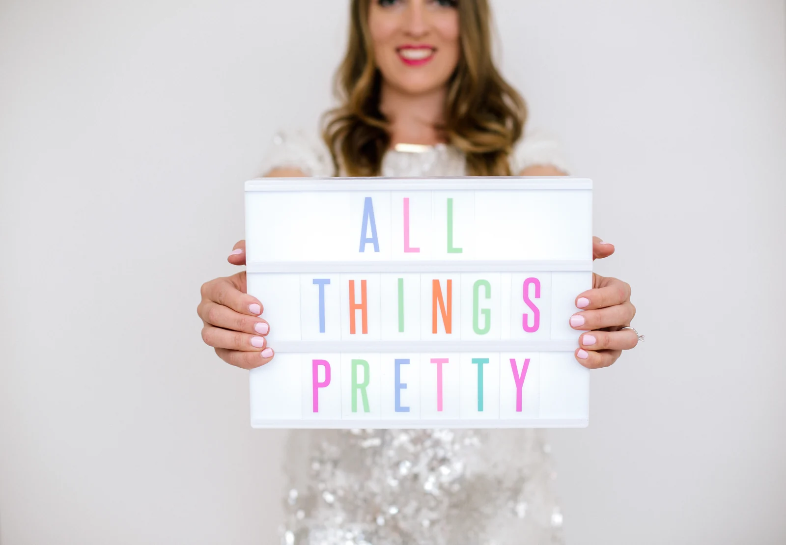
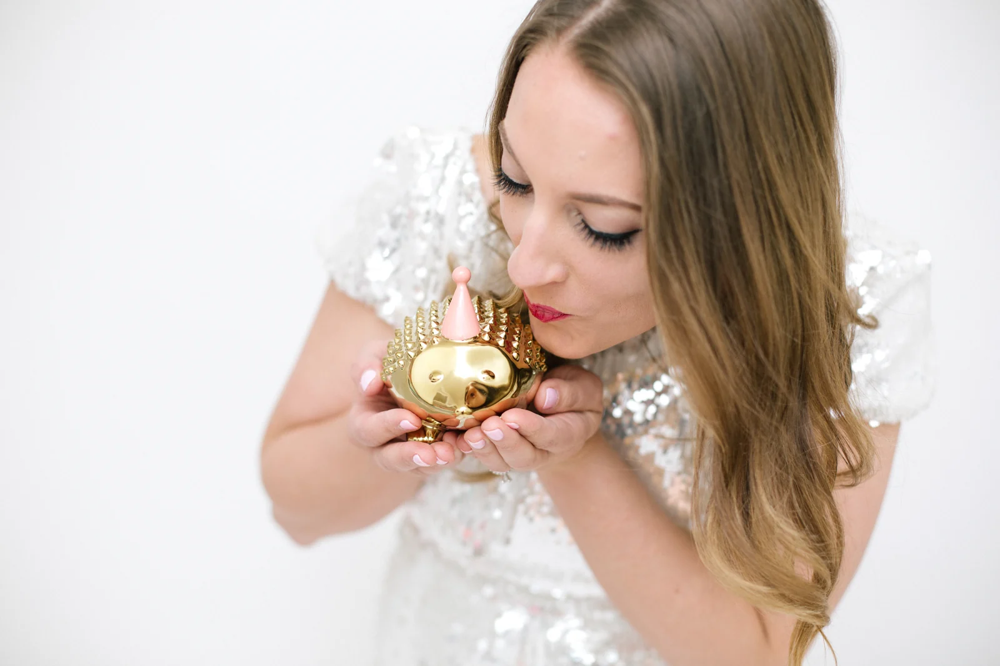
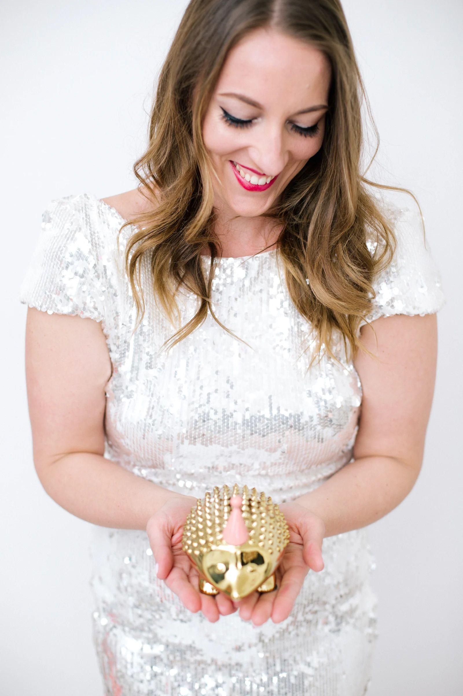

BRAND PORTRAITURE
All Things Pretty
Let the personality carry the brand.
Photography · Brand storytelling · Image selection
Brand portrait series · Detail and personality images · Consistent image selection · Flexible visual content

Enlarge image
Enlarge image
Enlarge image
Enlarge imageTHE THINKING
Context, craft,
and delivery.
The context
A service brand is often inseparable from its founder’s personality. This series uses color tools, simple props, expressive portraiture, and a restrained setting to make that connection visible.
My contribution
The photographs bring a consistent visual mood across different crops and moments: a recognizable face, a sense of craft, and the playfulness of the brand. The selection shows how a shoot can yield a family of useful images rather than a single hero shot.
Making the work useful
For brand content, the capture is one part of the work. Selection, editing, crop options, and an organized handoff help the images function across web, social, and printed communication.